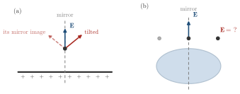

Page 1 of 11 of this session
2.1 Motivation and recap
Can we find the eigenstates of a Hamiltonian without diagonalizing it? In part we can, since a unique answer to a problem does not change under a symmetry of the problem, and this removes every candidate that changes. We will see this first for the electric field of a charged plane, where a mirror fixes the direction of the field with no integral from Coulomb’s law.
\[H = \sum_{ij} t_{ij}\, c_i^\dagger c_j \;+\; \sum_{ijkl} V_{ijkl}\, c_i^\dagger c_j^\dagger c_k c_l. \tag{1.5}\]
This is the general Hamiltonian of Section 1.12. The first term is bilinear, with the hopping \(t_{ij}\) between the sites \(i\) and \(j\), and it is the single-particle part. The second term is the quartic interaction, which this session leaves out.
Let us recall the single-particle part of the Hamiltonian (1.5) of Session 1, written in second-quantized, tight-binding form,
\[H = \sum_{ij} t_{ij}\, c_i^\dagger c_j,\]
where \(t_{ij}\) are the hopping matrix elements between sites \(i\) and \(j\). In this language, to solve a quantum material means to diagonalize this Hamiltonian, which is to find the unitary transformation that brings it into the diagonal form
\[H = \sum_n \epsilon_n\, \Psi_n^\dagger \Psi_n, \qquad \Psi_n^\dagger = \sum_i a_{n,i}\, c_i^\dagger.\]
Symmetries allow us to find this diagonal form, or at least strong qualitative and quantitative properties of it, without doing the diagonalization explicitly. This is the motivation for everything in this session. We will use symmetry not to classify order, but to simplify how we solve a quantum many-body problem.
2.2 Simplifying problems with symmetry in simple examples
We have all used this method before, also outside quantum mechanics. Let us take an infinite plane with a uniform positive charge, and let us ask in which direction the electric field points at some position away from the plane. It can point straight out, or it can be tilted by some angle. We can apply a mirror symmetry that exchanges left and right. The charge distribution does not change under this reflection, so the true field must also map to itself under the same reflection. A tilted field does not pass this test, since its mirror image is tilted in the other direction, while a field that points straight out does pass it. Since the electric field at that point is unique, symmetry alone removes every answer except the one perpendicular to the plane, and we never have to compute the integral from Coulomb’s law.
The same argument also works for a less simple shape. Let us replace the infinite plane by an ellipse with a uniform charge, which is an egg-shaped charge distribution. We ask the same question about the field at some point on its mirror axis. Mirror symmetry again gives the answer without tilt, this time with the reflection axis of the ellipse, and again without any explicit integration. Note that this only works on the mirror axis. At a point away from it the reflection maps the point to a different point, and symmetry alone does not fix the direction there. Schematic 2.2 draws both cases.
When a problem has a unique answer, a symmetry that leaves the problem unchanged also leaves the answer unchanged. A mirror leaves every point of its axis in place, so on the mirror axis of a charge the electric field can only point along the axis, and we find this with no integral.

Each picture shows a charged egg with one mirror axis, dashed. A point sits on the axis. Which arrow can be the electric field at that point?
Show the answers
- A. ✗ False
This is false. The mirror turns this arrow into the arrow that points to the left, at the same point. Take two equal charges at \((\pm d,0)\) and a point \((0,y)\) on the axis \(x=0\). Their components along \(x\) cancel, and the field points along \(y\) only.
- B. ✓ True
This is true. A component perpendicular to the axis is mapped by the mirror to the opposite component. The point lies on the axis, so the two are the field at the same point, and this component has to vanish.
- C. ✗ False
This is false. The tilted arrow has a part across the axis, and the mirror turns it into the arrow tilted to the other side. Both would be the field at the same point, so only the part along the axis can stay. This holds for any charge with this mirror, and it does not need a plane.
Only the components that the mirror leaves unchanged can survive on the axis.
Mirrors are only the simplest case. A circle stays the same under any rotation. A square stays the same only under rotations by \(90^\circ\), \(180^\circ\), and \(270^\circ\), and a shape with less symmetry may stay the same only under a single mirror. Quantum systems can have much richer symmetries, which are also much less obvious than these, and in the following we turn this richer structure into a systematic tool.
How many rotations, counting the identity, leave a square unchanged?
Show the answers
- A. ✗ False
This is false. A rotation by \(90^\circ\) maps every corner of the square to the next corner, so the square looks the same. We have at least \(0^\circ\), \(90^\circ\), \(180^\circ\) and \(270^\circ\).
- B. ✓ True
This is true. The rotations by \(0^\circ\), \(90^\circ\), \(180^\circ\) and \(270^\circ\) map the square to itself, and any other angle does not.
- C. ✗ False
This is false. A rotation by \(45^\circ\) moves each corner to a point beyond the middle of an edge, so the square becomes a diamond. The number \(8\) counts the rotations and the four mirrors together.
Counting the mirrors too, the square has eight symmetry operations, and four of them are rotations.
Four equal charges \(q\) sit at the corners of a square. Use the rotation by \(90^\circ\) about the center of the square to show that the electric field vanishes at the center. Then use a mirror to show that at the middle of an edge the field is perpendicular to that edge.
Solution
The plane of the square is a mirror of the four charges. So at a point of this plane the field has no part perpendicular to the plane, and we only need its two components in the plane. The rotation by \(90^\circ\) about the center maps the four charges onto each other and leaves the center in place. So the field at the center must be the same vector after the rotation. The only vector in the plane that does not change under a rotation by \(90^\circ\) is the zero vector, so \(\mathbf E=0\) at the center.
At the middle \(P\) of an edge we take the mirror line through \(P\) and the center, which is perpendicular to the edge. It maps the four charges onto each other and leaves \(P\) in place. The component of the field along the edge changes sign under this mirror, so it vanishes, and the field is perpendicular to the edge. With the charges at \((\pm a,\pm a)\) and \(P=(0,a)\), the two charges of this edge give opposite fields along it, and the two other charges, at the distance \(\sqrt5\,a\), give
\[E_y=\frac{4}{5\sqrt5}\,\frac{q}{4\pi\epsilon_0a^2}\approx0.36\,\frac{q}{4\pi\epsilon_0a^2},\]
which points away from the square for \(q>0\). In the next sections the same reasoning gives the eigenstates of a ring with one orbital per site, the Fourier modes, before we compute anything, and only the energies are left to compute. With several orbitals per cell it leaves only small blocks to diagonalize.
- In Section 2.3 the mirror argument becomes a symmetry operator that commutes with the Hamiltonian.
- In Section 3.11b a symmetry does more than simplify, since time reversal protects the helical edge of a quantum spin Hall insulator.
- Section 5.11 classifies the pairing of a superconductor by its symmetry, with the same kind of argument.